Everything in reach
Play, pause, skip, and drag to any point in the song, without leaving what you're doing.
A quiet companion for your Mac's notch.
What's playing, right by the notch. Volume and brightness with indicators that match. Native, free, and out of the way.
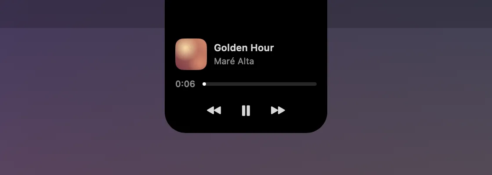
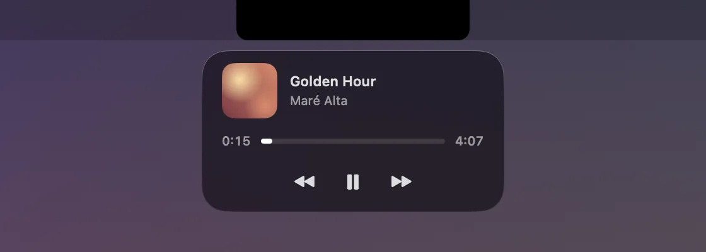
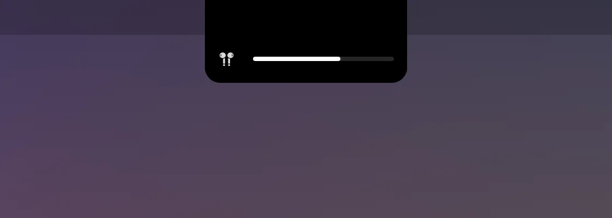
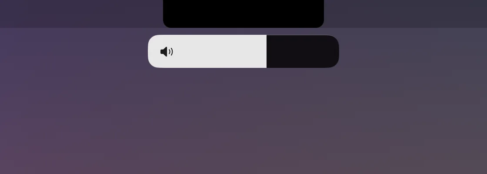
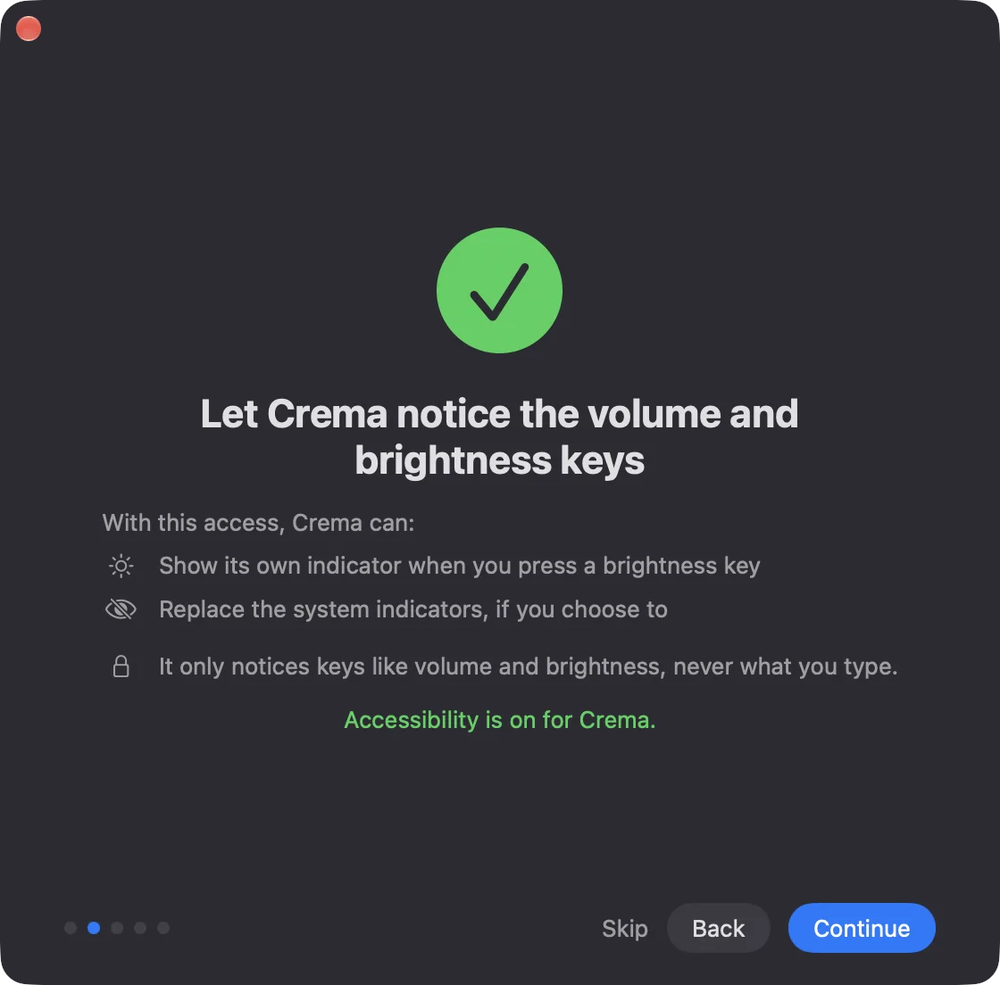
Now Playing
When a song starts or changes, Crema shows it by the notch for a moment, then tucks it away. Click the notch and the whole player opens: the artwork, where you are in the song, and the controls you reach for.
Play, pause, skip, and drag to any point in the song, without leaving what you're doing.
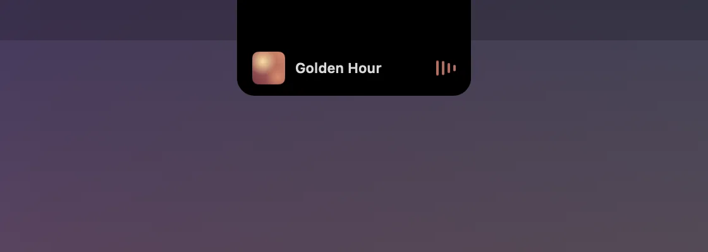
A new track appears beside the notch for a moment. Prefer quiet? Keep the player hidden until you click.
Music playing in Safari, Chrome and other browsers can show too. It's off until you turn it on.
Styles
Choose a style for every display at once, or give one display its own. On a Mac without a notch, Notch shows as Card.
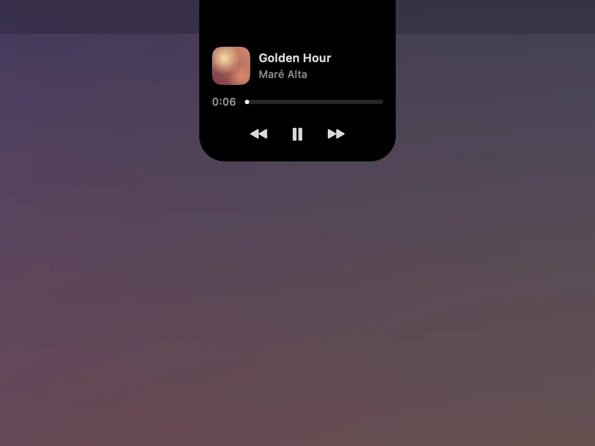
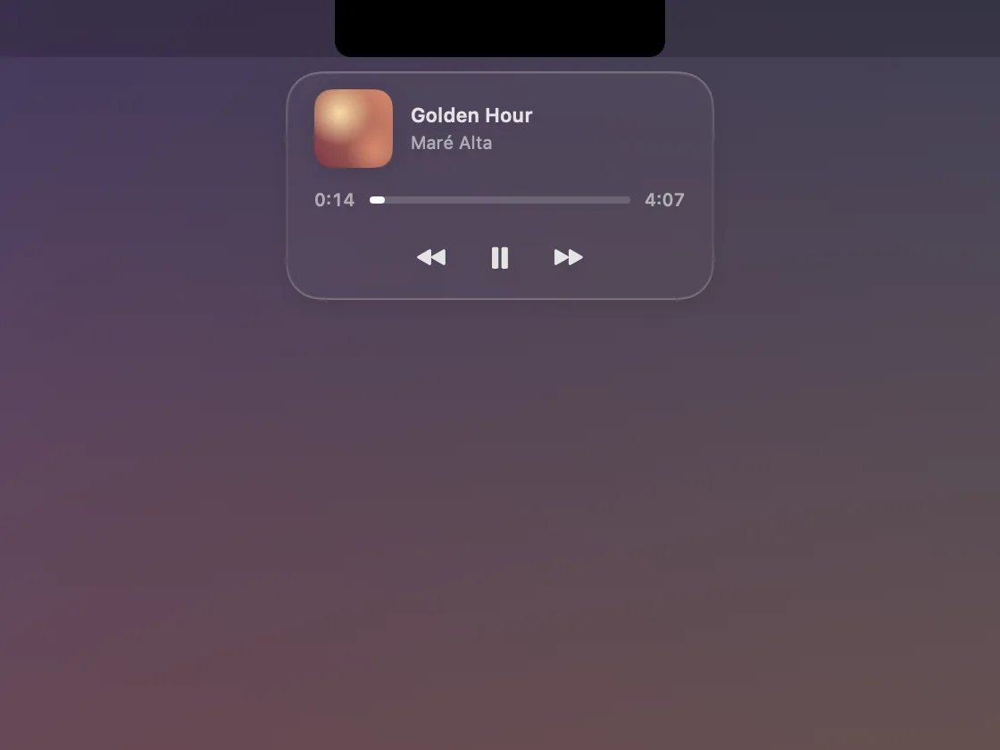
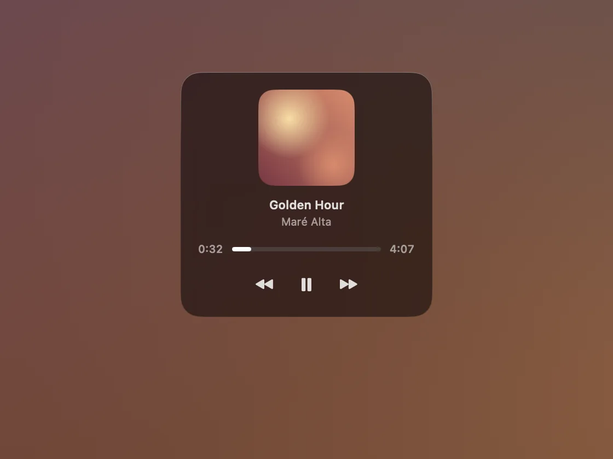
Black on black, flush with the bezel, as if the hardware had always done it.
Indicators
Turn on one switch and Crema replaces the system's volume, brightness and keyboard backlight indicators with its own, in the style you picked. Quit Crema and the system's come back.
The volume indicator shows whether you're on AirPods, headphones or an AirPlay speaker.
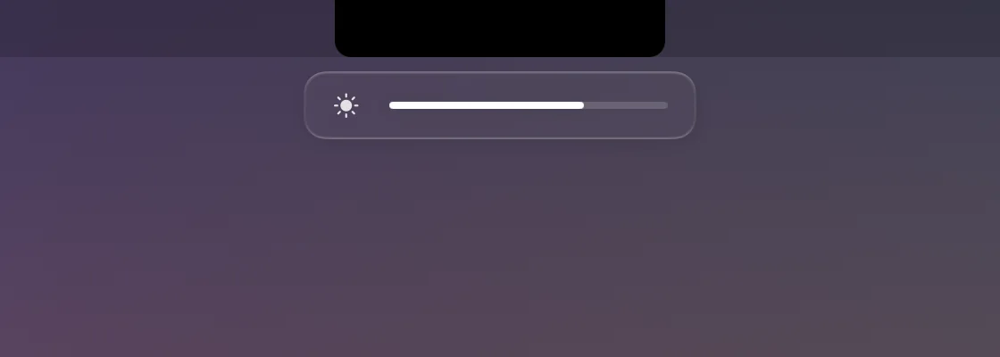
A brightness key acts on the display under your pointer, so you never dim the wrong screen.
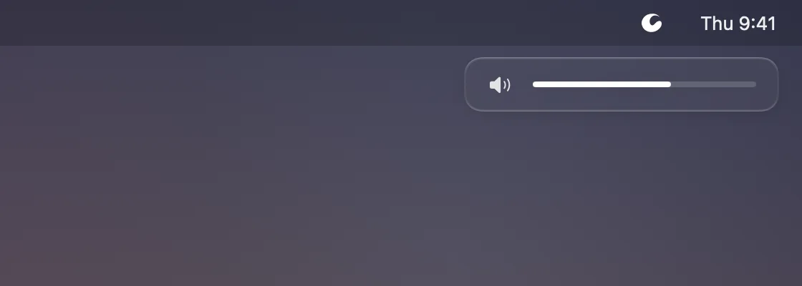
On Card, the indicator can sit in one of eight places, as a thin line or filling the whole card. At the bottom, it stays clear of the Dock.
Crema only takes over the indicators once you turn the switch on, and hands a key back to macOS whenever it can't act on it.
With BetterDisplay 4.2.1 or newer, Crema shows the brightness indicator for an external display too.
Setup
The first time you open Crema, a short tour shows it working on your own screen, asks for the one permission it uses, and lets you pick a style. Every step can be skipped.
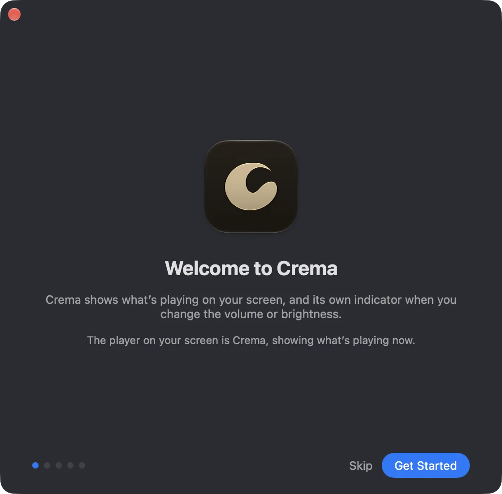
Privacy
No account, no analytics. Crema only notices keys like volume and brightness, never what you type.
Open source under the GPL-3.0. Every line is on GitHub.
Updates arrive through a signed feed.
The whole app, in English and Português.
Yes. Crema is free and open source under the GPL-3.0, and its code is on GitHub.
Any Mac with macOS 14 or later, Apple silicon or Intel.
No. On a display without a notch, Notch shows as Card, a panel just below the menu bar. Classic works everywhere.
So it can notice the volume and brightness keys, show its own brightness indicator and, if you choose, replace the system's. It only notices those keys, never what you type. Without it, Crema still shows what's playing and its volume indicator.
Each display can have its own style, and the player shows on the displays you switch on. For an external display's brightness, Crema works with BetterDisplay 4.2.1 or newer.
Crema isn't notarized by Apple yet, so macOS warns about an unidentified developer. Open System Settings, go to Privacy & Security and click Open Anyway, once. If there's no button, run this in Terminal:
xattr -dr com.apple.quarantine /Applications/Crema.appDownload the disk image, drag Crema into Applications and open it. It lives in the menu bar, not the Dock, and checks for updates itself.
Music by the notch, indicators that match, and nothing else asking for your attention.